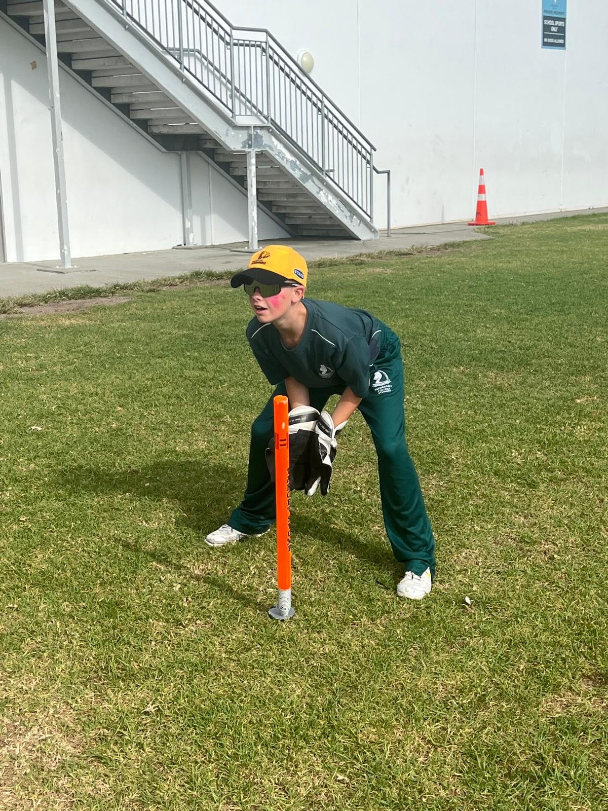

.jpg)
My Future Goals
Looking ahead, I’m in a really good position to make an impact at Pakuranga. I feel strong with both the bat and behind the stumps, and I’ve already had some standout moments—like my 58 not out off 28 balls. My goal is to become the first-choice keeper for the First XI, and I’ve got a clear vision of where I want to be. I’m also aiming to average around 35 runs per game with the bat, and I’ll keep working hard to reach that. As I improve, I want to keep pushing myself to bat higher up the order and take on more responsibility in the team. With consistent effort and focus, I’m confident I can become one of the key players for Pakuranga in the near future. And some day, I could even be the captain, with the leadership that I have displayed in the past.

My Batting
My batting future at Pakuranga School is looking pretty awesome. I’ve already shown what I can do with that 58 not out off just 28 balls—that was some serious hitting. I’ve got a good eye and I know how to accelerate when the team needs it. Going forward, I’m focused on improving my timing and shot selection even more. One of my big goals is to make the First XI, and with performances like that, I know I’m heading in the right direction. I just need to keep backing myself, and I’m confident I’ll become a regular in the team before long.

My Keeping
I’m already feeling solid behind the stumps. My reflexes are sharp, and I’ve got the right attitude for the role. Whether it’s taking catches, effecting stumpings, or keeping the bowlers focused, I’m doing it all. My goal is to become the first-choice keeper for the First XI, and with the way I’m improving, I know it’s totally achievable. I’ll keep working on my footwork and movement behind the stumps so I can cement my spot as the keeper for the top team.